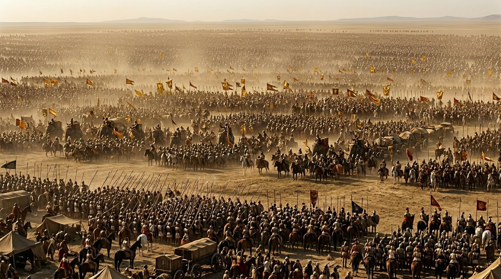

Los Inmortales: La Guardia de Élite del Gran Rey
De entre todos los cuerpos militares de élite de la Antigüedad, ninguno tiene un nombre más evocador ni más perfectamente calculado para inspirar terror y fascinación que el de los Inmortales persas. Diez mil hombres cuya cifra nunca cambiaba: si uno moría o caía enfermo, era reemplazado inmediatamente, de manera que el cuerpo siempre mantuviera su número exacto. De ahí el nombre —los Athánatoi, los que no mueren— que los griegos les dieron y que ha pervivido dos mil quinientos años en la memoria histórica.
El Origen del Cuerpo: Ciro y Darío I
Los Inmortales como cuerpo élite de la guardia real persa fueron creados o formalizados durante el reinado de Ciro el Grande o poco después, aunque las fuentes no están de acuerdo en los detalles exactos. La primera mención clara y detallada aparece en Heródoto, quien los describe durante las Guerras Médicas de principios del siglo V a.C., especialmente en el contexto de la invasión de Grecia por Jerjes en el 480 a.C.
Heródoto describe a los Inmortales como el núcleo de la infantería persa de élite, específicamente los diez mil mejores soldados del Imperio, equipados de manera más lujosa que el resto del ejército: lanzas con adornos de plata y oro, túnicas bordadas bajo la armadura, brazaletes de oro. Viajaban acompañados de sus propios carros con provisiones, concubinas y sirvientes. En el contexto de un ejército en campaña, los Inmortales eran no solo los mejores combatientes sino también los más privilegiados.
La fuente del nombre es Heródoto, aunque algunos historiadores modernos cuestionan si "Inmortales" era realmente la traducción del nombre persa original o una interpretación griega. El nombre persa podría haber sido Anûšiya —"compañeros"— y la confusión con "inmortales" podría derivar de la similitud fonética entre este término y el iraní antiguo para "inmortal". En cualquier caso, el nombre griego perduró y es el que la historiografía universal adoptó.

Organización y Equipamiento
Los diez mil Inmortales se dividían en dos grupos distintos con funciones parcialmente diferentes. Los primeros mil —a veces llamados la "guardia interior" o los "portadores de manzana" por los adornos en forma de granada de sus lanzas— eran la guardia personal del Gran Rey. Estos mil hombres tenían acceso privilegiado al rey, dormían cerca de su tienda en campaña, y eran el último anillo de protección del monarca. Sus lanzas tenían el adorno en forma de granada hecho de oro macizo.
Los nueve mil restantes formaban la guardia exterior, el grueso de la fuerza de élite. Sus adornos de lanza eran de plata en lugar de oro —la distinción entre los dos grupos era perfectamente visible a cualquier distancia. En campaña, estos nueve mil combinaban las funciones de guardia real con las de reserva táctica de élite que podía ser desplegada en el momento decisivo de una batalla.
El equipamiento de los Inmortales era más variado de lo que a veces se retrata. Los frisos de Persépolis —el testimonio iconográfico más detallado que tenemos— los muestran con lanzas largas, carcaj de flechas, y arcos. La combinación de lanza y arco era típica de la infantería persa de élite, que podía combatir tanto en formación cerrada como en combate a distancia. Llevaban escudos de sauce tejido cubiertos de cuero, más ligeros que los escudos griegos de bronce pero suficientemente protectores.
Los Inmortales en las Guerras Médicas
La actuación más documentada de los Inmortales es la de las Guerras Médicas, específicamente en Termópilas en el 480 a.C. Cuando Jerjes atacó la posición de los espartanos de Leónidas con su ejército masivo, los Inmortales fueron la punta de lanza del asalto. Y sufrieron bajas significativas contra los espartanos en la defensa del paso estrecho —una realidad que Heródoto registra con cierta satisfacción patriótica griega.
Fue precisamente en Termópilas donde quedó clara tanto la fortaleza como la limitación táctica de los Inmortales. En el combate en espacio abierto o en formación de masas numéricamente abrumadoras, eran extraordinariamente efectivos. Pero en el combate en un espacio reducido contra infantería griega pesada con el escudo hoplita grande y la lanza corta, las ventajas persas se neutralizaban. Los espartanos, cuyo entrenamiento desde la infancia los convertía en la mejor infantería pesada del mundo griego, igualaban o superaban a los Inmortales en el tipo de combate que tenía lugar en Termópilas.
El desenlace de Termópilas —la traición de Efialtes que reveló el camino de montaña que permitió a los persas flanquear la posición griega— no fue una victoria de los Inmortales en combate directo sino un triunfo de la inteligencia y la logística persas. Lo cual, paradójicamente, habla bien de los comandantes persas que comprendieron que el enfrentamiento directo tenía un coste demasiado alto.
El Destino de los Inmortales ante Alejandro
Cuando Alejandro invadió el Imperio Persa, los Inmortales seguían siendo el corazón de la guardia real. Estuvieron presentes en Issos y en Gaugamela, protegiendo la posición de Darío en ambas batallas. En Gaugamela, fueron los últimos en ceder cuando la cuña de Alejandro se aproximó al centro: cuando el Gran Rey huyó, su guardia personal —incluyendo probablemente a los mil Inmortales de la guardia interior— sufrió las peores bajas de la batalla intentando cubrir la retirada.
Tras la conquista macedónica, el cuerpo de los Inmortales desapareció como entidad organizada. Alejandro sustituyó la guardia real persa por la guardia macedónica, aunque incorporó a nobles persas y bactrianos a unidades mixtas. Algunos historiadores señalan que la guardia real macedonia —los agema de los Hetairoi y los hipaspistas reales— cumplía funciones análogas a las de los Inmortales en el sistema persa, aunque organizados de manera diferente y con una composición distinta.
"Los Inmortales no eran simplemente soldados de élite. Eran el símbolo viviente del poder del Gran Rey: diez mil hombres que no podían ser reducidos por la muerte porque el Imperio siempre repondría cualquier baja. Eran la inmortalidad del Imperio materializada en carne y bronce."
— Matt Waters, Ancient Persia, 2014
El Legado: Los Inmortales en la Cultura Popular
Los Inmortales persas tienen una presencia extraordinaria en la cultura popular moderna, aunque frecuentemente distorsionada. La película de Frank Miller "300" (2007) los retrata como guerreros con máscaras y armaduras negras, completamente diferentes de lo que la evidencia histórica y arqueológica sugiere. En realidad, los frisos de Persépolis muestran hombres con túnicas persas elaboradas, lanzas con adornos en forma de granada, y la dignidad de una guardia de honor tanto como de una fuerza de combate.
La fascinación persistente con los Inmortales refleja algo más profundo que el mero interés histórico: es la atracción por la idea de una fuerza militar que trasciende la mortalidad individual, donde el conjunto es más que la suma de sus partes. En ese sentido, los Inmortales son el antecedente conceptual de muchas élites militares modernas, desde la Guardia Imperial de Napoleón hasta las fuerzas de operaciones especiales contemporáneas. El principio de que la excelencia militar puede organizarse y replicarse, creando una fuerza cuya potencia no depende de ningún individuo sino del sistema que la sustenta, es un legado que va mucho más allá de los frisos de Persépolis.
Fuentes y Referencias Científicas
- Heródoto — Historias, VII.83, s. V a.C.
- Matt Waters — Ancient Persia: A Concise History, Cambridge, 2014
- Pierre Briant — From Cyrus to Alexander, Eisenbrauns, 2002
- Josef Wiesehöfer — Ancient Persia, I.B. Tauris, 2001
Continúa leyendo
El Legado Aqueménida que Heredó Alejandro →